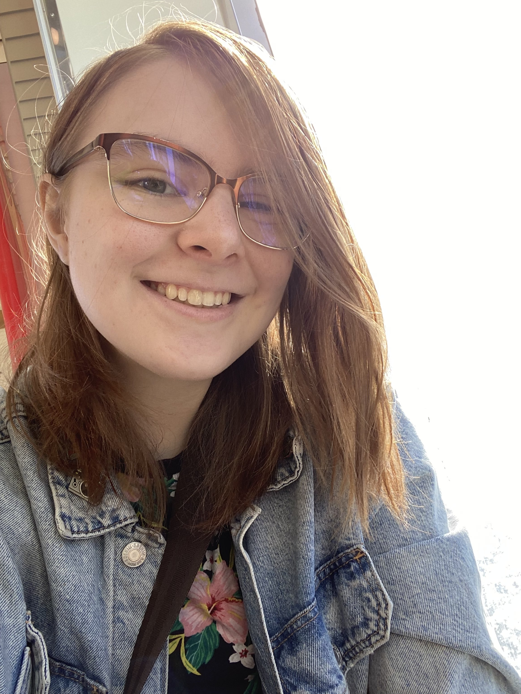
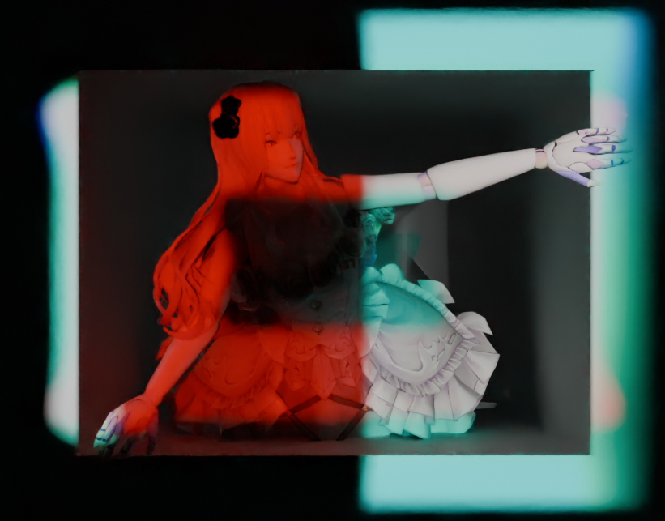

MAX TAKAHASHI
( ANY )
ArtStation: @chromayo
About the Artist
I am originally from Burbank, CA, and have been immersed in digital media and pop culture for my entire life. When I first entered college and started 3D modeling, I never intended to pursue the field as a career at first. I was locked into my major of photography and saw product photography as my future because I had skills in it. However, as time went on, I realized that something integral was missing. So, I searched for a path that would allow me to collaborate, use my love for storytelling, and create something that was meaningful to me and others. Since then, I've practiced a multitude of software with each one of them making me more excited to pursue Digital Media Art because each one is like a different game to experiment and glitch out.
Data to Noise
Max Takahashi brings characters to life to convey their messages. Inspired by cartoons, comics, and story driven games, their work spans multiple mediums such as 3D modeling, videos, net art, and more, with each application exploring the conjunction of the comfort of nostalgic make-believe, and the mundane horrors of existence. Their intent is to create introspective spaces by means of escapism as well as tackling internal issues head on, bringing the viewer into a world where they can process their emotions in a space that can be safe and familiar. This escapism surfaces as comedy, melancholy, or a mix of both, and is often presented in a fantastical universe of its own.
